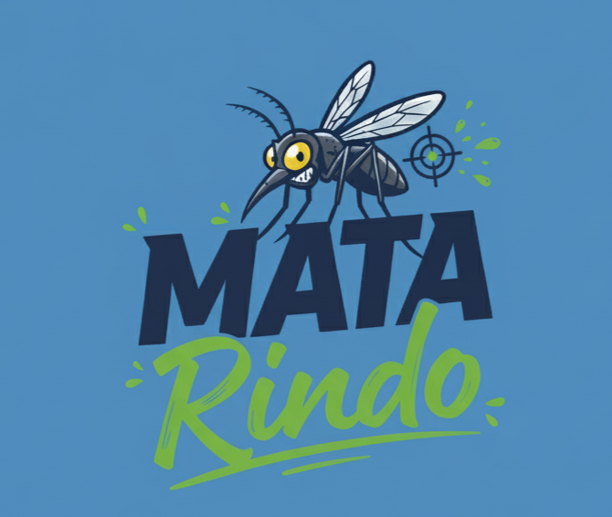

TRANSFORMANDO EXPERIÊNCIAS EM RESULTADOS

HOME
PLANOS ESPECIAIS
LIMPEZAS DE TANQUES
CONTROLE DE PRAGAS
LIMPEZA DE CAIXAS DE GORDURA
CONTATOS
Cuidar da vida começa por eliminar o que ameaça o nosso lar.
Tanques limpos, vida protegida — porque o cuidado começa na base.
Caixas limpas, ambiente saudável — porque o cuidado começa onde ninguém vê.